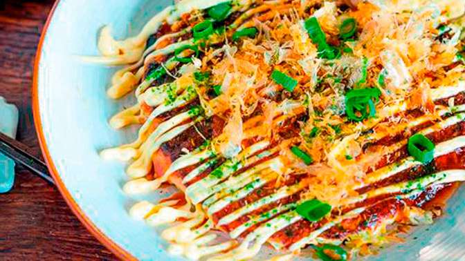
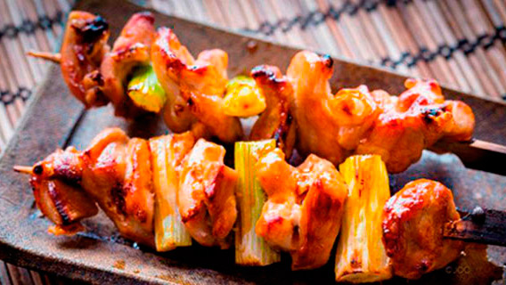
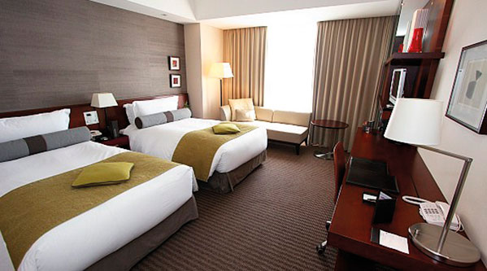
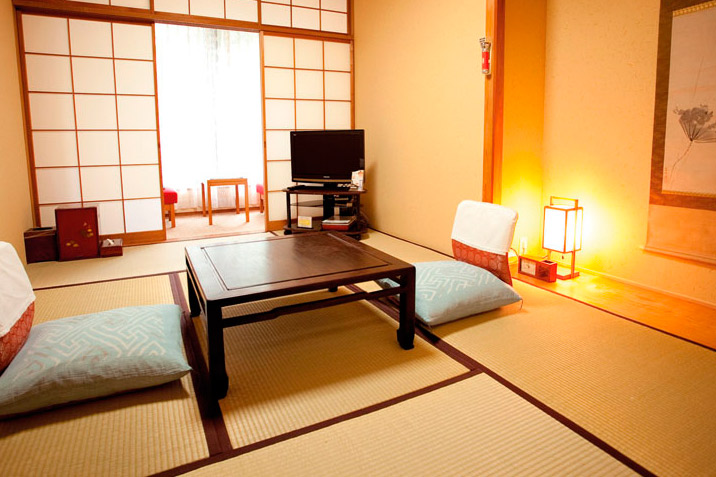
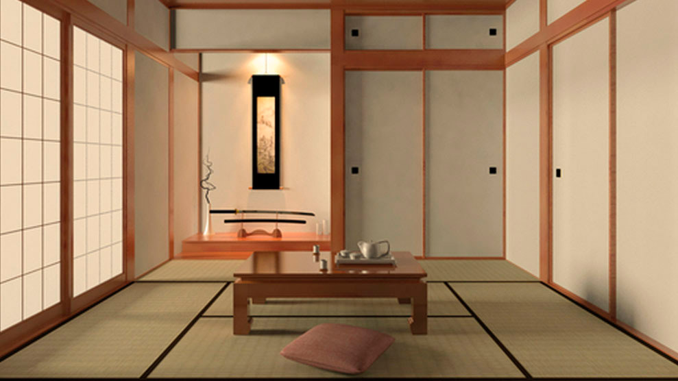
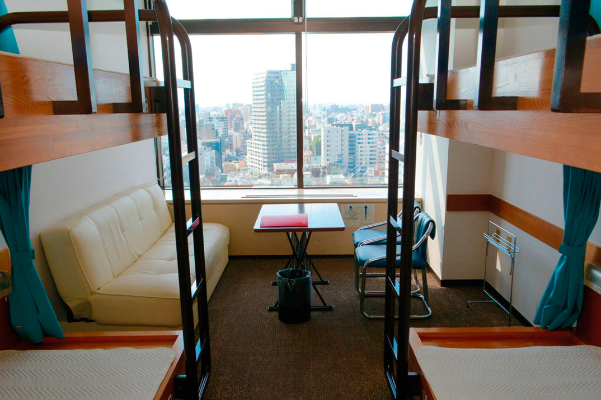

Tòquio
Tòquio és la capital japonesa, està dividida en dues àrees principals: la continental i la insular. L'àrea continental està localitzada en el marge nord-oest de la badia de Tòquio i està enclavada al centre-oest de l'illa de Profund o Honshu, formant part de la regió de Kanto.
Curiositats
1) Els japonesos són extremadament silenciosos.
2) Sens dubte un dels grans contrastos que s'aprecien a Tòquio (i en tot Japó) són les lleis respecte al tabac.
3) Són extremadament ordenats.
4) Hi ha bars amb lloguers de gossos i gats.
5) En Japó la cosmètica és un punt fort, per això les japoneses van molt arreglades.
6) Els banys japonesos incorporen lectors de targeta i fins i tot pantalles per poder escoltar la teva pròpia música o veure fotografies.
7) Al contrari que en altres països, els rodamons japonesos viuen al carrer però no demanen diners i són totalment pacífics.
8) Japó és el país de les màquines expenedores. I el preu dels articles sempre és el mateix.
Menjar japonès
Als japonesos els agrada menjar, i Tòquio és una ciutat plagada de restaurants, molts d'ells oberts durant tot el dia. Les botigues 24 hores també tenen diversos productes precuinats i ofereixen la possibilitat de cuinar o escalfar alguns dels plats que venen (noodles, arrossos o pasta).
Menjar a Tòquio i, a Japó en general, pot resultar sorprenentment econòmic. En la major part dels locals de carrer trobareu plats a partir de 600 iens, a més que la quantitat d'un plat és tanta que quasi és suficient per a tothom.
A més del baix preu dels plats, en tots els restaurants serveixen gratis aigua i te. D'altra banda, cal recordar que no cal deixar propina en Japó.
Quina és la millor zona per menjar?
El que en altres ciutats podria estar clar, a Tòquio no es pot dir que hi hagi zones determinades. A qualsevol zona de la ciutat trobareu llocs molt similars. Si voleu anar pel cap alt típic, el millor sushi se serveix als voltants del Mercat de Tsukiji, si voleu "arriscar", podeu provar el Fugu en Shinjuku.
Menjar ràpid
Si no teniu massa temps, a Japó també abunden els locals de menjar ràpid. Restaurants locals que fan la competència a McDonalds i a Burger King serien: Lotteria (molt recomanable), First Kitchen (a més d'hamburgueses serveixen pasta i altres plats bastant bons) i Mos Burger (el més fluix amb diferència).
Dada

Existeixen unes caixes anomenades Bento, i són caixes de menjar per emportar. És molt habitual que en viatjar amb tren els japonesos portin el seu menjar. Ja que hi ha treballadors japonesos que no tenen molt temps, i per no endarrerir-se per arribar al treball, han de menjar fora.
Els preus de les caixes Bento són bastant econòmics i podreu comprar caixes des de 500 iens. La major part dels supermercats i la gran majoria dels restaurants venen menjar per emportar.
Gastronomia japonesa
Sushi:

Arròs cuit adobat amb diferents ingredients. El més habitual és que vagi acompanyat de peix o marisc cru, encara que no és l'única varietat.
Sashimi:
Ramen:

Sopa de fideus japonesos. Pot portar sopa de diferents tipus (sal, soia o miso) i diferents acompanyaments (pollastre, llom, ous, etcètera).
Okonomiyaki:

Alguns ho comparen amb la pizza i uns altres amb la truita. El Okonomiyaki és una massa de diversos ingredients cuinats a la planxa.
Yakitori:

Encara que tradicionalment ha estat una broqueta de pollastre a la graella, actualment es pot trobar yakitori de vedella, peix, marisc i altres ingredients.
Gyoza:

Yakisoba:

Teriyaki:

Més que un plat és una tècnica de cocció. Té un sabor dolç i se serveix amb diversos ingredients.
Tempura:

Vegetals, mariscs o carns fregits amb un suau arrebossat.
Fugu:

El famós peix globus, caríssim i verinós, només pot ser consumit en locals autoritzats.
On dormir?
Hotel

Qualsevol hotel situat prop del metro o de la línia Yamanote pot considerar-se apropiat, Les zones Shinjuku, Ginza, Roppongi i Shibuya, són les més recomanables. Buscant bé i reservant amb la suficient antelació és possible trobar habitacions dobles en hotels bons des de 70 euros la nit. Si esteu disposats a gastar, tampoc tindreu cap problema per trobar hotels prou cars. Hi ha moltes pàgines web per buscar hotels.
http://www.hotelesbaratos.com/tokio/
Ryokan

Un Ryokan és un allotjament tradicional japonès. Sòl de tatami, joc de te a l'habitació i un altíssim nivell de servei defineixen aquest tipus d'allotjament.Encara que per endinsar-se en la cultura japonesa és recomanable passar almenys una nit en un Ryokan, cal dir que la majoria dels clients d'aquests allotjaments són japonesos i la reserva és de vegades bastant complexa. Pocs són els Ryokans que atenen en anglès i que ofereixen reserva per la web.
Apartaments

Els apartaments tenen més adeptes i s'han convertit en una alternativa ideal als hotels. I també, en la web es troben apartaments a tot el món amb preu mínim garantit.
http://www.apartamentosbaratos.com/tokio/
Albergs i hostals a Tòquio

Els preus dels albergs a Tòquio comencen en els 15 € per llit. Com tot a Japó, un baix preu no implica un mal servei. I com els apartaments i els hotels, es pot buscar i reservar, hi ha moltes pàgines de viatges dedicades a reservar llocs per tot el món. Una recomanable per això és: